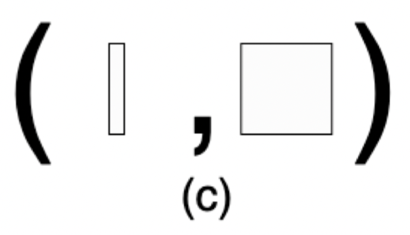

Pure Tensor Program Rewriting via Access Patterns
这是一篇基于EGraph对Tensor级别的IR进行Term Rewrite的文章.
Abstract
对于现存的Pure IR 比如relay, 并不会关注底层的data layout 对于现存的Pure IR 比如relay, 并不会关注底层的data layout 相关信息.另一边用于底层优化的IR却并不是Pure IR,难以进行term rewriting.为了解决这个问题,提出了Glenside（Access Pattern）,一种Pure IR可以抽象出low level的硬件表示,同时经过term rewriting后甚至能自动发现im2col这种等效计算方法.
Introduction
TVM 和 Halide已经通过简单的rewrite system做到了simplify和边界分析,但是现存的IR对于Tensor IR抽象和粒度不匹配还是影响了term rewriting,以上两个项目中都需要写出非常详细的pattern来进行 simplify的.
term rewriting面对的主要问题就是有副作用的IR, 因此需要提出一种没有副作用的IR, 同样也能表示这种操作.
传统的tensor通常用一个正整数tuple作为shape来表示的. 而Access Pattern替换了传统的表示方法, 使用两个shape来表示, 例如\(((x),\ (y,\ z))\) ,通过这种方式把tensor的迭代维度从计算的维度分离开来.
比如一个三维的Tensor运算,典型如带有Batch的矩阵乘,在Batch维度进行迭代,在后面两个维度进行计算,其示意图如下： 
From Pure matMul to IR Design Goals
要把函数式编程和Term Rewriteing应用到Tensor IR上需要仔细的设计.举个例子, 我们必须要保证每个op由固定的Tensor Shape组合而成,
Pure Matrix Multiplication
我们用[A]表示一个由A类型组成的向量. 那么可以表示出内积为 \([f64] \cdot [f64] \rightarrow f64\)
然后2D Tanspose表示为 \([[f64]] \rightarrow [[f64]]\) 这里的意思就是一个向量内部由向量组成,那么就是2D矩阵了, 同时输出也是同样的2D矩阵,(可能维度发生了变化)
2D的矩阵乘的公式如下: \(R_{ij} = \sum_k P_{ik}Q_{kj} = P_{i} \cdot Q_{j}^T\)
也就是计算输出\(ij\)上每对\(P\)的行和\(Q\)的列长度为\(k\)的向量内积.
因此我们引入map 操作: \(map : (A \rightarrow B) * [A] \rightarrow [B]\) \((A -> B)\) 表示的就是一个函数,他的计算就是把类型A转换为B.
笛卡尔积: \(cardProd : [A] \times [B] \rightarrow [A \times B]\)
假设这里的\(A\)和\(B\)都是一维向量[f64],这里\(A \times B\)就是表示的是[[f64]],其中里面的维度是2, 外面维度和\(A\)相同, 最后外面再加一个维度得到\([A \times B]\).
\(matmul(P,Q) = map(dotProd, cartProd(P, trans2(Q)))\)
这里的思路就是\(P\)和\(Q\)的转置 每个元素组合, 也就是\(P\)的行和\(Q\)的列组合, 组合好后每个数据对都应用内积求结果.
这个matMul公式实例化就如下所示, 注意到输出的数据就变成了[f64]. 各位也可以自己将P = [[f64]]带入公式中推导一下shape.
import numpy as np
def dotProd(AB):
(A, B) = AB
assert A.ndim == 1
return np.dot(A, B)
def cartProd(A: np.ndarray, B: np.ndarray):
AB = []
for a in A.reshape((-1, A.shape[-1])):
for b in B.reshape((-1, A.shape[-1])):
AB.append((a, b))
return AB
def trans2(A: np.ndarray):
assert A.ndim == 2
return A.transpose()
def test_cardproduct():
P = np.random.rand(3, 4)
Q = np.random.rand(4, 5)
print(list(map(dotProd, cartProd(P, trans2(Q)))))
[0.10732114230108192,
0.21243371438870884,
0.34685428666259904,
0.14556577914149274,
0.23254688326914144,
0.5821735344411842,
0.9735256103240557,
1.9118977760582447,
0.5735451588389484,
0.5549736743719554,
0.31553182873079905,
0.582579830538644,
1.1357542180343412,
0.20513303615713718,
0.3916623321089719]上面那个公式的得到的结果是[f64],但是实际上我们的2D矩阵乘就是要得到2D的结果. 经过观察,很明显就是cartProd会将shape给展开, 因此简单的修改方法则是添加一个新的函数.
\(cartProd2D : [A] * [B] -> [[A*B]]\)
但是如果用这个函数代替上面的cartProd, map时就会出错,他不能把一个[[f64]]的输入传递给dotProd.
因此添加一个新的mapAt2, 将map作用在指定维度
\(mapAt2 : (A \rightarrow B) * [[A]] \rightarrow [[B]]\)
那么要得到[[f4]]的矩阵乘结果,公式如下:
\(matMul(P,Q) = mapAt2(dotProd), cartProd2D(P, trans2(Q))\)
对应的代码实现如下:
def cartProd2(A: np.ndarray, B: np.ndarray):
n, m = len(A), len(B)
AB = [[1 for j in range(m)] for i in range(n)]
for i in range(n):
for j in range(m):
AB[i][j] = (A[i], B[j])
return AB
def mapAt2(func, A: list[list[any]]):
n, m = len(A), len(A[0])
B = [[1 for j in range(m)] for i in range(n)]
for i in range(n):
for j in range(m):
B[i][j] = func(A[i][j])
return B
P = np.random.rand(3, 4)
Q = np.random.rand(4, 5)
print(np.array(mapAt2(dotProd, cartProd2(P, trans2(Q)))))
[[1.90265933 1.37014723 1.90525837 2.16506508 0.8182536 ]
[1.74624439 1.06923152 1.74345372 1.85747233 0.82131666]
[1.88350644 1.49704492 1.93444511 2.1764349 0.8319122 ]]Glenside Design Constraints and Goals
我们根据上面提出的函数就能写出一系列的rewrite规则了.但是有个规则时依赖于特定维度的shape, 如果我们有了更高阶的维度, 我们首先得实现对应的算子(就像刚才需要添加一个cart Product2D),还得在所有的规则上添加新的规则转换,比如1D转换2D,2D转1D. 非常容易就出现组合爆炸的问题.
一种解决方法是添加lambda函数,通过偏函数的方式解决shape align的问题
\[
\text{matMul}'\ P\ Q\ :=\ \text{map}'(\lambda\ \text{r} \Rightarrow \text{map}' (\text{dotProd}'\ \lambda)\ (\text{trans2}\ Q))\ P
\] 或者使用index标记的方式 \[
\text{matMul}(P,Q)[i,j]\ :=\ \text{dotProd}(P[i],\text{trans2}(Q)[j])
\]
但是上面两种方法实际上都是要添加name binding的,这对term rewriting来说是很困难的,因为你做rewrite的时候需要分析每个表达式上下文,当前的var bind到的是什么.作者利用egg尝试了实现,但是发现潜在的搜索空间膨胀问题还是难以解决.
以上所有的约束就是Glenside需要解决的问题: 提供一个灵活的IR支持高阶的tensor的操作的同时支持高性能的term rewriting.
Glenside
Access Patterns
access pattern将通用的tensor IR的dimension分成了iterated over 和 computed on两部分. 其中iterated over表示的就是accessed. (这种思路和numpy的universal functions比较类似).比如之前的matMul的例子,就是在dim 0进行迭代,在dim 1 进行计算.
access pattern 是被tensor shape所定义为两个tuple组成 paIR \((S_a,\ S_c)\),tensor 的shape 等于两个tuple的concat结果.
对于一个tensor T, 我们用\(n_A\)表示\(S_A\)的长度, 此时我们利用语法 \(\text{access}\ T\ n_A\)来表示这个tensor的access pattern.
比如\(\text{T.shape} = (m,n)\)那么\(\text{access}\ T\ 1\)就表示\(((m),(n))\)
Access Pattern Transformers
access pattern transformer修改一个或多个access pattern生成一个新的access pattern, glenside通过这个可以支持复杂的pattern如slice transpose.
其实就是把一些tensor的operator仅仅用修改access pattern的进行实现了,比如transpose,其本质就是改变了数据的访问顺序,对于pad就是多访问了一些元素.access pattern的妙处就是把很多复杂的操作都看成了对于tensor的访问这种简单的抽象,同时我们还不需要像TVM/MLIR一样定义一套shape infer的图,因为access pattern原生就能表示tensor的shape.
下面举个🌰： 比如我们要取tensor \(Q\)的每一列进行矩阵乘, 此时使用transpose transformer,把access pattern修改成当前需要的结果.
比如\(Q\)的shape为\((N,O)\),\((\text{access}\ Q\ 1)\)表示读取每一行进行计算 \(((N),(O))\), \((\text{transpose}\ (\text{access}\ Q\ 1)\ (\text{list}\ 1\ 0))\)就表示把读取每一行的访问模式变成了读取每一列进行计算即
\[ \begin{aligned} (\text{access}\ Q\ 1) &= ((N),(O)) \\ (\text{transpose}\ (\text{access}\ Q\ 1)\ (\text{list}\ 1\ 0)) &= ((O),(N)) \end{aligned} \]
接下来对于cartProd的access transformer如下:
\[ \begin{aligned} ((a_0,\ldots,a_n),\ (c_0,\ldots,c_p)),\ ((b_0,\ldots,b_n),\ (c_0, \ldots,c_p)) \Rightarrow ((a_0,\ldots,a_n,\ b_0,\ldots,b_n),\ (2,\ c_0,\ldots,c_p)) \end{aligned} \]
其中\((2,\ c_0,\ldots,c_p)\)表示的就是concat起来的两个子tensor.
在矩阵乘中, \(Q = (M,N),\ P = (N,O)\), 读取\(Q\)的行与\(P\)的列\((((M),\ (N)),\ ((O),\ (N)) )\),然后带入cartProd的access transformer得到\(((M,\ O),\ (2,\ N))\). 那么就表示在\(Q\)的行与\(P\)的列上每次取两个长度为\(N\)的向量进行计算.
Access Pattern Operators
operator是Glenside中唯一表示计算的IR. 他们只在添加compute前缀时才被invoke（区别于access pattern transformer）, 即把操作映射到access pattern的compute维度上, 最终返回的access pattern中compute维度会被修改为operator所指示的,简单的说就是计算所调用的函数.
| Operator | Type | Description |
|---|---|---|
| reduceSum | \((\ldots) \rightarrow ()\) | sum values |
| reduceMax | \((\ldots) \rightarrow ()\) | max of all values |
| dotProd | \((t,s_0,\ldots,s_n) \rightarrow ()\) | eltwise mul ; sum |
通过cartProd之后得到了\(((M,O),(2,N))\)的access pattern, 然后应用dotProd之后的得到了\(((M,O),())\), 最后一个矩阵乘的Glenside表示·就如下所示：
\[ \begin{aligned} & (\text{compute}\ \text{dotProd} &;\ \ \ &((M,O), ()) \\ & \ (\text{cartProd} &;\ \ \ &((M,O), (2, N)) \\ & \ \ (\text{access}\ \text{activations}\ 1) &;\ \ \ &((M), (N)) \\ & \ \ \ (\text{transpose} &;\ \ \ &((O), (N)) \\ & \ \ \ \ (\text{access}\ \text{weights}\ 1) &;\ \ \ &((N), (O)) \\ & \ \ \ \ \ (\text{list}\ 1\ 0)))) \end{aligned} \]
5. Case Studies
这里主要是展示Glenside将典型的一些深度学习kernel转换到了加速器上.
5.1 Representation of Common ML Kernels
2D Convolution
卷积的计算公式如下：
\[ \begin{aligned} &\operatorname{out}[n, o, x, y]= \\ &\sum_{d x, d y, c}(A[n, c, S[0] \cdot x+d x, S[1] \cdot y+d y] \cdot W[o, c, d x, d y]) \end{aligned} \]
转换为Glenside表示： \[
\begin{array}{lll}
\text { (transpose } & ; & \left(\left(N, O, H^{\prime}, W^{\prime}\right),()\right) \\
\ \text { (squeeze } & ; & \left(\left(N, H^{\prime}, W^{\prime}, O\right),()\right) \\
\ \ \text { (compute dotProd } & ; & \left(\left(N, 1, H^{\prime}, W^{\prime}, O\right),()\right) \\
\ \ \ \text { (cartProd } & ; & \left(\left(N, 1, H^{\prime}, W^{\prime}, O\right),\left(2, C, K_{h}, K_{w}\right)\right) \\
\ \ \ \ \text { (windows } & ; & \left(\left(N, 1, H^{\prime}, W^{\prime}\right),\left(C, K_{h}, K_{w}\right)\right) \\
\ \ \ \ \ \text { (access activations 1) } & ; & ((N),(C, H, W)) \\
\ \ \ \ \ \ \text { (shape C Kh Kw) } & & \\
\ \ \ \ \ \ \text { (stride 1 Sh Sw)) } & & \\
\ \ \ \ \ \text { (access weights 1))) } & & ((O), \left.\left(C, K_{h}, K_{w}\right)\right) \\
\ \ \ \ \text { 1) } & & & \\
\ \ \ \text { (list } 0 \text { 3 1 2) ) } & &
\end{array}
\]
首先取出weights的\((C,K_h,K_w)\),然后使用windows的操作生成新的access pattern \(((N,1,H’,W’),(C,K_h,K_w))\). 即对于输出的每一个的像素位置,取一个原始的输入窗口. 最后每个窗口和卷积的 filter 进行外积后计算内积. 再用squeeze和transpose得到输出的结果.
Max Pooling
其数学公式如下：
\[ \begin{aligned} &\operatorname{out}[n, c, x, y]= \\ &\max _{d x, d y}(\text { activations }[n, c, \text { strides }[0] \cdot x+d x, \text { strides }[1] \cdot y+d y]) \end{aligned} \]
他的Glenside表示与卷积类似,windows之后reduce即可：
\[ \begin{array}{ll} \text { (compute reduceMax } & ;\left(\left(N, C, H^{\prime}, W^{\prime}\right),()\right) \\ \ \text { (windows } & ;\left(\left(N, C, H^{\prime}, W^{\prime}\right),\left(K_{h}, K_{w}\right)\right) \\ \ \ \text { (access activations 2) } & ;((N, C),(H, W)) \\ \ \ \ \text { (shape Kh Kw) } & \\ \ \ \ \ \text { (stride Sh Sw))) } & \end{array} \]
我觉得glenside把访问和计算分离的方式就极大的简化了计算的算子, 因为访问变换的时候其实包含了传统表述中计算的一部分.比如上面的两个例子中, conv2d和maxpool的核心都是取window然后计算,一个是取3d一个取2d, 但是此时取window的并不是在window函数上配参数,而是直接把这个信息附加到tensor自身上了.
这种表示方法虽然无法和通常的数学计算流程表示一一对应,但是他作为IR就起到了很好的桥梁作用,并且他这个内积外积设计就和很多加速器的核心逻辑一致.
Mapping matMul to Accelerators
Glenside所提出的demo是一个weight-stationary的脉动阵列,然后Glenside基于egg的库添加了一系列的规则,下面是将矩阵乘转换为脉动整列计算的规则：
\[ \begin{aligned} &\text { (compute dotProd (cartProd ?a0 ?a1)) } \Longrightarrow \\ &\quad \text { (systolicArray ?rows ?cols } \\ &\quad ? a 0 \text { (access (transpose ?a1 (list } 1\ 0))\ 0) \text { ) } \\ &\text { where ?a0 is of shape ((?batch), (?rows)) } \\ &\text { and ?a1 is of shape ((?cols), (?rows)) } \end{aligned} \]
脉动阵列的形状参数由\(\text{rows}\)和\(\text{cols}\)所决定,同时在接下来的access pattern中更加细致的表示硬件如何访问tensor,首先是读取所有的数据\((\text{hence},(\text{access}\ \ldots\ 0))\),然后在内存中进行transpose.这种更加细致的表示方法可以提供更加丰富的数据layout信息,对于后续的优化/codegen有潜在的好处.
Flexible Mapping: Discovering im2col
im2col的布局转换可以提升计算速度,虽然会导致一部分的内存开销. 这种transform涉及直接在内存中对windows操作实例化,虽然会导致额外的数据复制,但是只要这个开销小雨取偏移的开销就是有好处的. 接下来Glenside将展示如何自动发现im2col的transform.
首先上面提出的脉动整列转换都是只针对单纯两个向量计算的映射,而卷积/矩阵乘最大的问题就是最后的内积/外积操作输入的tensor维度并不确定,所以需要先自动的把access pattern的维度降下来转换到脉动阵列上,不然我们又回到了为每个场景写pass的情况了.
Glenside提出一个exploratory rewrite,即添加一系列看似无效的操作从而引入潜在的rewrite机会.比如把一个access pattern展平之后并reshape为原样,这样就能解决之前规则中维度不匹配的问题. \[
\begin{aligned}
?a \Rightarrow (\text{reshape}\ \ (\text{flatten}\ ?a)\ \text{?shape})
\end{aligned}
\]
不过这样也带来了一个问题,添加了reshape之后还需要消除它才能真正的进行脉动阵列的转换,因此又添加了关于reshape与cartProd/dotProd计算的composition commutativity规则,将reshape操作从表达式中移除（意思就是这里没什么好办法,直接手动加两个规则规避一下比较简单）. \[
\begin{array}{r}
\text { (cartProd (reshape ?a0 ?shape0) (reshape ?a1 ?shape } 1) \text { ) } \Longrightarrow \text { (reshape (cartProd ?a0 ?a1) ?newShape) } \\
\text { (compute dotProd (reshape ?a ?shape)) } \Longrightarrow \text { (reshape (compute dotProd ?a) ?newShape) }
\end{array}
\] 不过最终的结果证明了只需要寥寥几个规则就可以达到传统手写pass的程度,编写的复杂度更低,同时无需考虑pass ordering的问题.
Flexible Mapping: matMul Blocking
接下来作者探索了用Glenside做tiling,比如把\(256 \times 256\)转换为多个\(16 \times 16\)小矩阵乘. 和脉动阵列一样,作者也是需要一个探索性的rewrite以及一些消除多余operate的rewrite,这里的探索性rewrite那肯定就是slice/concat了: \[
\begin{aligned}
?a \Rightarrow (\text{concat}\ \ (\text{slice}\ ?a\ ?dim\ ?b0\ ?b1) (\text{slice}\ ?a\ ?dim\ ?b1\ ?b2)\ ?dim)
\end{aligned}
\] 不过这个探索性太强了,如果全部都组合肯定直接爆炸,因此作者设置的每次切一半,保证是2的倍数.然后再添加一些规则消除计算前的concat/slice.
总结
Glenside有效的解决了底层IR与DSA的映射问题.- 可以利用
egraph的特点去做到一些自动发现乘加矩阵融合等优化. - 作者提到
rewrite和polyhedral是可以结合起来的,但我发现作者代码中求解tiling的时候用了一个ILP的库去加速搜索,不知道单纯用rewrite能达到两者一起的多少效果.